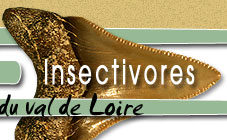
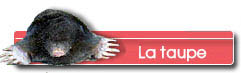
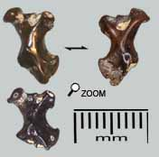
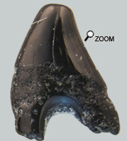
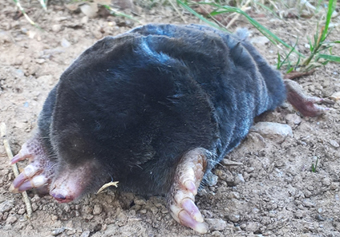

|
  |
||
 |
|
||
 Les restes de talpa des faluns  Cependant l'humérus qui est le pilier des membres fouisseurs, fait exception et l'on peut rencontrer cet os dur et trapu dans les faluns. L'humérus est proportionnellement plus long chez Proscapanus que chez la taupe actuelle. On notera qu'on retrouve rarement l'humérus en entier. Toute la partie fine évasée de l'os a tendance à disparaître et il ne reste souvent que le petit X de l'articulation. Proscapanus était une toute petite taupe comparée à Talpa Europaea. Ce qui fait de Proscapanus un tout petit insectivore et donc un animal difficile à retrouver dans les sédiments. Une canine à 2 racines  Et oui, chez beaucoup d'insectivores, les canines ont aussi 2 racines! Après, la morphologie assez simple de cette dent laisse à penser qu'il pourrait s'agir d'une canine inférieure de talpidé. Ce serait la moins mauvaise attribution.
Talpa du Miocène : Proscapanus Apparemment Proscapanus ressemblait beaucoup à notre taupe de jardins, tout au moins pour ce qui est du squelette. Les taupes actuelles n’aiment pas les terrains trop humides  ou sableux. Dans les forêts du miocène, Proscapanus devait bien s’accommoder des pluies tropicales qui devaient avoir tendance à inonder son habitat? Elle est apparue tardivement dans le bassin de la Loire au Langhien. Les changements climatiques en cours à cette époque ont pu favoriser sa dispersion. Proscapanus devait bien s’accommoder des pluies tropicales qui devaient avoir tendance à inonder son habitat? Elle est apparue tardivement dans le bassin de la Loire au Langhien. Les changements climatiques en cours à cette époque ont pu favoriser sa dispersion.
Les répartitions géographiques des 5 espèces actuelles européennes de taupes ne se juxtaposent pas, puisque chaque région ne compte qu’une seule espèce, rarement 2. L’étude des fossiles en Europe montre que la faune de talpidés était très riche au miocène, puisque de nombreuses espèces ont été recensées sur les mêmes sites. Cependant, pour le cas particulier des faluns, peu d'espèces sont signalées. Mais pour être honnête, une révision serait souhaitable. |
|||